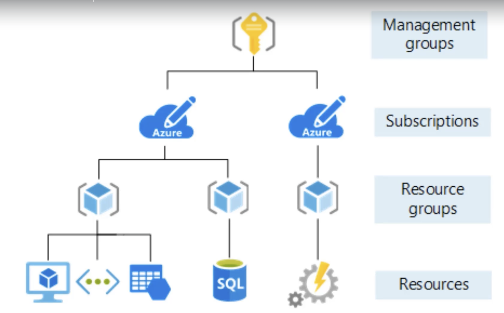
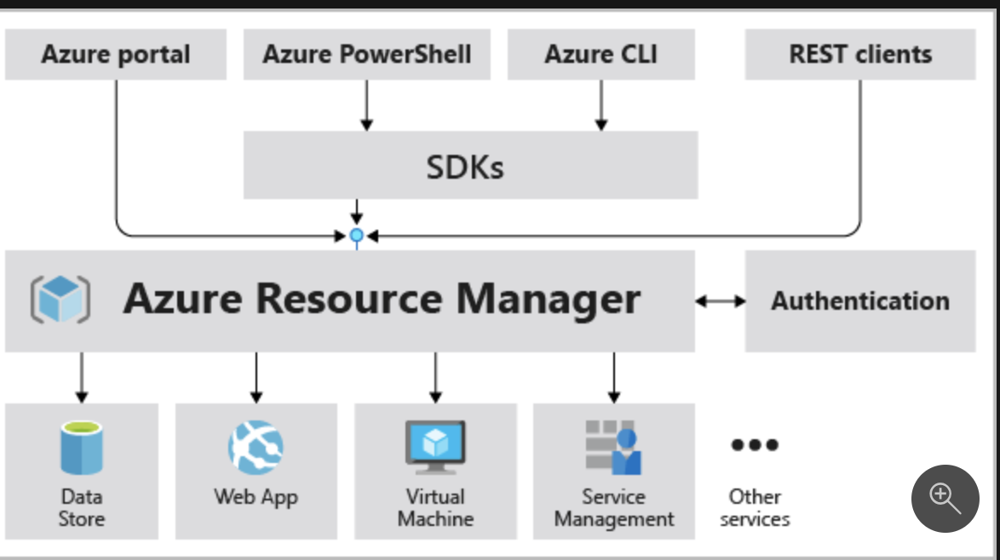

Azure Fundamentals AZ-900
Table of Contents
Understanding Cloud Concepts (15 - 20%)
Benefits of cloud computing
- High Availability
- Scalability
- Elasticity
- Agility
- Geo-distribution
- Disaster recovery
Consumption-based model
Cloud comoputing is consumption based
- No upfront costs
- Pay when needed, stop when done
CapEx vs OpEx
Capital Expenditure is spending money upfront on physical infrastructure and deducting those expenses with tiem
Operational Expenditure is spending money on products and services now, can deduct the expense the same year you spend it
Cloud service Categories
- IaaS
- Cloud provider keeps hardware up to date. E.g. virtual machines
- PaaS
- Shared responsibility, Cloud hosts platform, you control inner platform, E.g. ADF, Azure App Services to host apps
- SaaS
- Cloud responsible for everything e.g. office 365

Figure 1: Comparison
Types of cloud
- Public Cloud
- Services offered on public internet and available to anyone.
- Private Cloud
- Computing resources used exclusively by users from one business or organization. Can be on-prem or hosted by third-party
- Hybrid cloud
- Combination of the two - shares application between public and private cloud
Understand core Azure services (30 - 35%)
Azure Regions
54 regions curently (2 in SA - north and west)
Availability Zones
Within each region there are multiple (3) data centres that have geographical distance between them.
If a region has a diamond on it on the map, it has an availability zone, so you can deploy to all 3 data centres, which means if one goes down you still have data in the other 2.
Resource Groups
Way of organising resource groups

Figure 2: resource groups
Azure Resource Manager (ARM)
Model of deployments
Used to use Azure Service Manager (ASM)
Basically like a router between the user and Azure. How you interface with Azure
Enables you to interface with Azure in a consistent way, regardless of what you're trying to access.
Benefits
- Deploy things as a group
- Repeatedly deploy these things with templates
- Access Control (role-based)
- Tagging

Core architectural components
Broken up into 4 categories
Compute
"Executing code" in the cloud. A website, batch process, anything that computes on the cloud.
There are many different ways to compute on the cloud
- Virtual machines
- Running windows or linux machine, full control - as if it was your machine (You have a "slice" of a physical machine). Over 200 options between CPU, RAM etc
- Virtual machine Scale Set
- Multiple VMs running behind a load balancer. Infinitely scale horizontally; limited vertical scale due to hardware limit
- Azure App Services
- PaaS - Give your code and config to Azure, and they will run it. Promise of performance but no access to hardware
- Functions
- No longer in exam :) Small bits of code that run natively in code (write on editor in azure)
- Azure Container Instance (ACI)
- Single instance, quickest way to deploy a container
- Azure Kubernetes Service (AKS)
- Runs on a cluster of servers, enterprise-grade
Networking
Connectivity Service
When you create a virtual machine you have to create a virtual network
- Virtual Network
- Emulating a physical network. MS Global Network already exists, so a VN is just software config
- Virtual Private Network (VPN)
- Connecting two networks as if they were on the same network
- ExpressRoute
- high-speed private connection to Azure (physical fibre connection to an actual Azure box)
Protection Service
Firewall, privacy measures
- DDos Protection
- Basic level included to protect their own network. You can pay for enhancement for your services
- Azure Firewall
- You can configure traffic connecting to your services. Can handle brute-force attacks and stuff
- Network Security Groups
- access control list (ACL(, static list of rules that allow traffic through
- Private Link
- Take public services and turn them into private services.
All of the services are protected by an access key
Delivery Service
Distributes or reloads traffic
- Load Balancer
- distribute traffic evenly between multiple backend servers
- Application Gateway
- a higher level of load balancer with an optional firewall
- Content Delivery Network (CDN)
- Stores common static files on the edge, closer to the users for (perceived) imporoved performance
- Azure Front Door Service
- Load balancer, CDN and firewall all-in-one
Monitoring Service
Watch traffic that travels across your network
- Network Watcher
- ExpressRoute Monitor
- Azure Monitor
Storage
Unmanages Storage
The Azure storage account.
- General Purpose v2 (gpv2)
- most common: Blobs, tables, queries, files
- Azure Data Lake Storage Gen2
- Cheapest type of storage. Designed for big data
Cheapest storage option - pay per GB
Benefits:
- Access tiers: Hot, cool, archive
- Performance tiers: Standard or premium
- Location
- Redundancy / Replication
- Failover options
Managed storage
Azure Virtual Machine Disks - for VMs
Reserve capacity in advance
Backup, Replication and Recovery Storage
- Recovery Services Vault
- Backup storage
- Can have retention policy
- Also for replication
- Azure Site Recovery
Databases
- Cosmos DB
- Extremely fast storage
- Designed for modern applications - requiring thousands of global replication
- NoSQL
- Multi-modal (contains multiple kinds of data - either mongodb, gremelin db, 5 or 6 different kinds that you have to choose in advance.
- Supports many open-source API's and protocalls
- Azure SQL Database
- Running SQL Server engine underneath (not exact match, but close)
- Database as a service
- Benefits:
- Easy to replicate
- Easy to scale
- Easy to migrate from SQL Server on-prem to cloud
- Azure Database for Mysql
- Managed version of mysql
- Azure Database for PostgreSQL
- Has better support for clusters and more complex server setups
- Managed version
- Tools and services for your migration journey
- SQL Data warehouse - analytical not transactional
Core Azure Solutions
Internet of Things
- IoT Hub
- IoT Central
Big Data and Analytics
- Azure Synapse Analytics (formely SQL Data Warehouses)
- HDInsights
- Data Lake Analytics (not relevant anymore - rather use databricks)
- Azure Databricks
AI
- Azure Machine Learning Service
- Studio
Serverless
- Azure Functions
- Logic Apps
- Event Grid (used to be App Grid)
Management Tools
Ways to connect to and manage Azure
- Azure CLI
- Bash - useful for scripting automation
- Powershell
- SDK for powershell
- Azure Portal
- Web interface
- Azure Cloud Shell
- CLI in the browser (can choose between bash and powershell)
- Azure Advisor
- Advises you how you can optimise your performance regarding use of azure (e.g. where you can save money) - AI that analyses your usage